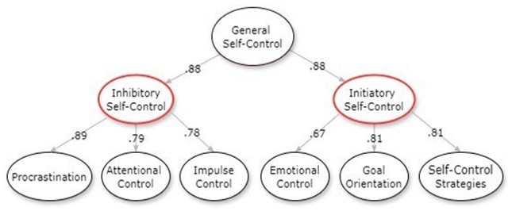

Om MSCS og dine MSCS-resultater
En hierarkisk modell
The Multidimensional Self-Control Scale (MSCS) er utviklet for å måle selvkontroll og brukes aktivt i internasjonal selvkontrollforskning.
Skårer vises på en 7-punktsskala. Hvor høyere skåre betyr at man viser at man har vurdert seg selv til høyere grad av et trekk, og motsatt.
MSCS er en hierarkisk modell med tre nivåer.

På grunnleggende nivå finner man seks faktorer (prokrastinering, oppmerksomhetskontroll, impulskontroll, emosjonell kontroll, målorientering og selvkontrollstrategier).
På mellomste nivå finner man to faktorer som hver er et sammendrag av de grunnleggende faktorene.
Den første, inhibering, består av prokrastinering, oppmerksomhetskontroll og impulskontroll. Den andre faktoren, initiering, består av emosjonell kontroll, målorientering og selvkontrollstrategier.
Det øverste nivået består av faktoren "selvkontroll" som er sammenstilling av alle de grunnlegende faktorene.
Forklaring av faktorer
Prokrastinering: handler om tendensen til å utsette oppgaver og forpliktelser. Merk: skårer på prokrastinering er reverserte og fremstilles derfor som "fravær av prokrastinering". En høy skåre på fravær av prokrastinering indikerer at man har rapportert liten grad av prokrastinering.
Oppmerksomhetskontroll: handler om evnen til å opprettholde fokus og konsentrasjon.
Impulskontroll: handler om evnen til å motstå umiddelbare impulser og fristelser.
Emosjonell kontroll: handler om evnen til å regulere følelsesmessige reaksjoner.
Målorientering: handler om hvor fokusert man er på kortsiktige og langsiktige mål.
Selvkontrollstrategier: handler om strategier for å overvinne utfordringer og vanskeligheter.
Dine MSCS-resultater
For dokumentasjon om MSCS og utviklingprosessen for MSCS, besøk denne lenken.
Her vises det at ikke bare enkelte personlighetstrekk, men også kombinasjoner av personlighetstrekk er viktig for vår selvkontroll: lenke